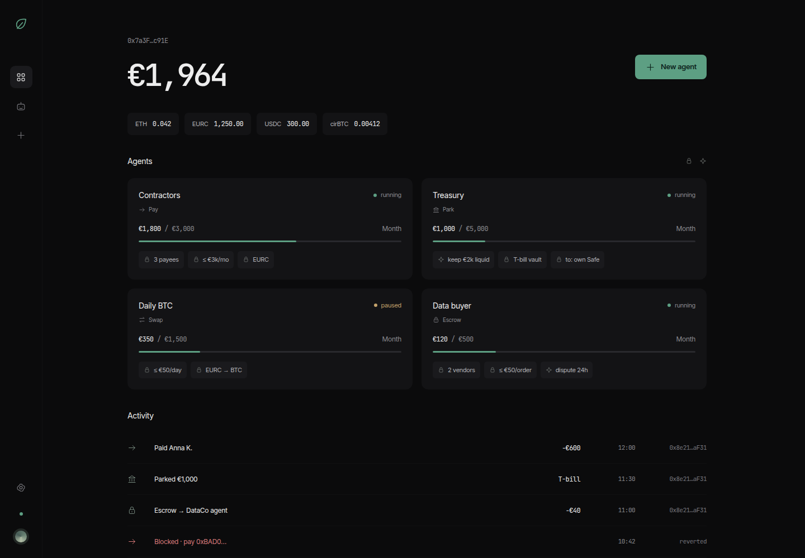
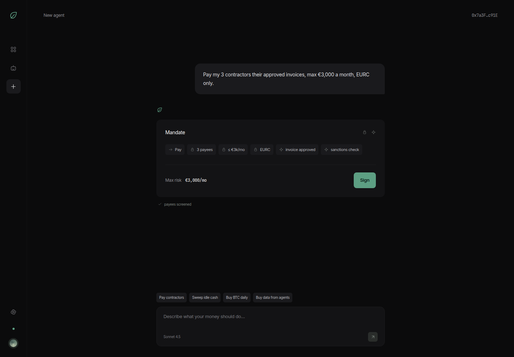
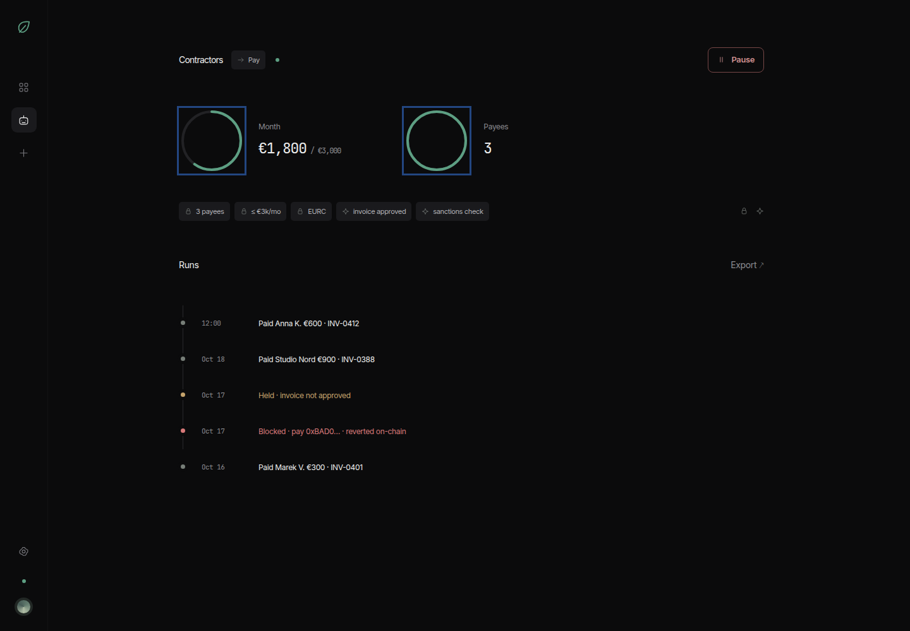

Thyme Payroll
Выплаты подрядчикам за границу: минута вместо дней
Компания держит евро-стейблкоин EURC в собственном сейфе Safe. Агент читает счета, проводит 20 проверок и передаёт одобренные выплаты Thyme; владелец одной подписью разрешил Thyme ровно одно действие — перевод EURC из этого Safe, и ничего больше. Новый получатель и каждый спорный счёт ждут владельца.
Какую проблему решаем
- Дорого. Перевод €1 000 подрядчику в Украину, Грузию или Индию через SWIFT обходится в €23–94 со всеми комиссиями и конвертацией.
- Долго и непредсказуемо. Медиана SWIFT — 1 ч 38 мин, но хвост длинный: для Южной и Центральной Азии медиана 22 ч, и лишь 43 % платежей доходят до получателя за час.
- Только в рабочие дни. Чешские банки принимают платёж до 14:00–15:00; одобренный в пятницу в 15:01 дойдёт в понедельник в лучшем случае.
- Подмена реквизитов и ручные проверки. Письмо «мы сменили счёт» — классическое мошенничество, а получателя надо сверять со списками санкций: в сводном списке ЕС 6 234 лица и организации, и он меняется.
Что такое EURC и в чём подвох
Стейблкоин — цифровая единица, привязанная к обычной валюте один к одному. EURC — евро-стейблкоин, который выпускает Circle Internet Financial Europe под надзором французского регулятора ACPR по закону MiCA; он внесён в реестр ESMA, и в ЕЭЗ его обменивают на евро 1:1 без комиссии. Перевод EURC стоит центы (€0,02–0,18 в сети Ethereum, около €0,001 в сети Base), подтверждается в блокчейне за ~12 секунд и работает круглосуточно. Крупнейший евро-стейблкоин: €442 млн в обращении, ~58 % рынка.
Подвох, честно
- (а) Кто-то должен держать ключи от кошелька и нажимать «отправить». Поручить это ИИ опасно: его можно обмануть поддельным счётом или инструкцией, спрятанной в PDF. Авторы Zodiac Roles предупреждают: «Правила в инструкциях агента — это просьбы».
- (б) Проверки никуда не делись. Санкции обязательны для всех (закон 69/2006 Sb.), налоги и бухгалтерия — тоже.
- (в) Подрядчику надо обменять EURC на местные деньги. Эта цена переходит к нему: на счёт SEPA через биржу Kraken — €0,90–1; у частных продавцов в Украине и Грузии — разница курса 0,5–1,5 %; в Сербии через лицензированный обменник — около 3,5 %; в Индии стейблкоин не признаётся валютной выручкой (FEMA). Выше €1 000 биржа потребует подтвердить владение кошельком.
Как мы это решаем
1. Сейф компании (Safe)
Деньги лежат в Safe компании; ни агент, ни Thyme владельцами не являются, а приложение не хранит ни одного ключа.
2. Мандат
Одной подписью владелец ставит на Safe модуль Zodiac Roles с одним правилом: Thyme может вызвать только перевод EURC из этого Safe — ни approve, ни другой токен, ни смену владельцев или модулей, ни пакетные вызовы. Отключается из Safe{Wallet} в любой момент. Лимиты и список получателей сегодня держит агент; перенос их в правило — следующий релиз Thyme.
3. Агент
Читает счёт, извлекает получателя, кошелёк и сумму, проводит 20 проверок, объясняет решение и передаёт одобренную выплату Thyme по вебхуку. Платит всегда на кошелёк из реестра, а не на тот, что напечатан в счёте.
Правило держит блокчейн, а не инструкция для ИИ. Уберите ИИ — правило останется. Уберите нас — деньги останутся у вас.
Как это работает
Подключение — один раз, пять шагов
- Вход кошельком. Подпись сообщения (Sign-In with Ethereum) в MetaMask или через WalletConnect; у каждого пользователя своё пространство.
- Свой Safe. Приложение показывает Safe, где вы владелец, или вы вставляете адрес. В Safe{Wallet} приложение открывается как Safe App, и адрес подставляется сам.
- Одна подпись. Thyme по API готовит транзакцию; перед подписью видно, что Thyme сможет и чего не сможет. Владелец подписывает её в MetaMask — на Safe появляется модуль Roles с правом только на перевод EURC.
- Thyme подтверждает транзакцию, создаёт задачу pay-invoice и вебхук. Консоль Thyme открывать не нужно.
- Готово. Газ за выплаты платит Thyme; ETH на Safe не нужен.
Каждый счёт — четыре шага
- Загрузка: PDF, PNG, JPEG или TXT (до 10 МБ).
- Проверки. Агент (Claude на Amazon Bedrock) извлекает получателя, кошелёк и сумму, проводит 20 проверок, считает балл 0–100 и объясняет решение.
- Решение. Новый получатель или предупреждение — владелец одобряет и задаёт месячный лимит. Известный получатель с чистым счётом выше порога — автоматически, без подписи.
- Выплата через Thyme. Вебхук → Thyme отправляет EURC из Safe; ~12 с до блока. Авизо, таблица и журнал готовы.
| Что делает человек | Что делает агент | Что гарантирует блокчейн |
|---|---|---|
| Входит кошельком и подключает Safe одной подписью; регистрирует получателя и месячный лимит; одобряет предупреждения; может выключить автооплату, поставить агентов на паузу или отключить модуль в Safe{Wallet} | Читает счёт, проводит 20 проверок, считает балл, объясняет решение, передаёт выплату Thyme, готовит авизо, таблицу и журнал | Из Safe можно только перевести EURC — ни approve, ни другой токен, ни смена владельцев и модулей, ни пакетные вызовы; остальное отклоняется. Лимиты на получателя в правиле — следующий релиз |



Для жюри
Открыть демо → web-production-e14ca.up.railway.app
Тестовая сеть Ethereum Sepolia, реальных денег нет. На странице входа нажмите «Jury demo»: откроется демо-пространство с пятью подрядчиками, тремя прошлыми выплатами (помечены как симуляция), счётом INV-0388 в ожидании одобрения и остановленным поддельным INV-0432, и начнётся пошаговая экскурсия по всем экранам (кнопка-искра в боковой панели запускает её заново). Всё, что вы делаете дальше — загрузка, одобрение, «Send anyway», — проходит через настоящий конвейер проверок; демо-пространство платит через помеченную симуляцию.
Со своим кошельком: вход через MetaMask или WalletConnect, подключение собственного Safe на Sepolia одной подписью и настоящие выплаты через Thyme. В Safe{Wallet} приложение добавляется как пользовательское Safe App по тому же адресу.
Настоящие операции в Sepolia: подключение Safe одной подписью — 0xd469…36d6 (модуль Roles 0x7a9F…eb35); выплата по счёту в индийских рупиях — 2,34 EURC, 0x2bf6…57b3; выплата 2,50 EURC — 0xa23f…fac0. Обе выплаты ушли из Safe компании 0x490d…6592, газ оплачен Thyme.
Что будет, если счёт подделан
- 1Приходит счёт INV-0432: имя Анны, та же сумма, но другой кошелёк и фраза «реквизиты обновлены».
- 2Агент останавливает счёт: балл 10 из 100. Проверка «Кошелёк совпадает с реестром» провалена — она критическая, и её провал опускает потолок балла до 10, сколько бы остальных проверок ни прошло; «Целостность счёта» тоже провалена. Деньги не двигались.
- 3Нажимаем «Send anyway» — так поступил бы обманутый человек. Приложение требует отметить каждую проваленную проверку по отдельности и написать причину; всё уходит в журнал решений, счёт и выплата помечаются как переопределённые.
- 4Даже тогда деньги идут только на кошелёк Анны из реестра. Адрес, напечатанный в поддельном счёте, не получает ничего: агент никогда не платит на адрес из документа.
Проверки перед каждой выплатой
Двадцать проверок, каждая с весом и важностью; у каждой помечено, кто её держит: агент до вызова Thyme или чтение самого блокчейна. Любой провал останавливает выплату.
| # | Проверка | Что смотрит | Кто проверяет |
|---|---|---|---|
| Критические — провал опускает балл до 10 | |||
| 1 | Кошелёк в счёте совпадает с реестром | кошелёк из документа против кошелька на файле; платёж в любом случае идёт на адрес из реестра | агент |
| 2 | Получатель не под санкциями | сводный список ЕС, OFAC SDN, национальный список ЧР; точное, по словам и нечёткое совпадение | агент |
| 3 | Кошелёк не под санкциями | адреса ETH из OFAC SDN и пометки об адресах в списке ЕС | агент |
| Высокой важности — провал опускает балл до 40 | |||
| 4 | Известный получатель | реестр: статус, выплачено к дате, доверие | агент |
| 5 | Реквизиты получателя стабильны | журнал: смена кошелька, резкое повышение лимита, крупная первая выплата в первые 24 ч | агент |
| 6 | Целостность счёта | дубликат номера, аномальная сумма, даты, арифметика, инструкции в тексте | агент |
| 7 | Криминалистика PDF | белый или мелкий текст, невидимый режим, JavaScript, второй кошелёк в тексте — без модели | агент |
| 8 | Страновой риск | режимы ЕС, чёрный и серый списки FATF, список ЕС высокорисковых стран | агент |
| 9 | В пределах месячного лимита | выплаты за 30 дней против лимита получателя; allowance Roles, когда читается | агент |
| 10 | Схема платежей | 3+ выплаты за 24 ч; дробление: 3+ счёта до €1 000 за 7 дней, вместе больше €1 000 | агент |
| Средней важности — сбой источника не задерживает счёт | |||
| 11 | Курс валюты | Tatum, ECB (Frankfurter), статическая таблица; фиксинг ČNB для бухгалтерии | агент |
| 12 | Эмитент EURC по MiCA | реестр ESMA; аттестация резервов против выпуска в обращении | агент |
| 13 | Лицензии и предупреждения регуляторов (компании) | набор данных Mostly Right по LEI, домену и имени | агент |
| 14 | Подрядчик владеет кошельком | подпись EIP-712 при регистрации, в том числе для смарт-кошельков | агент |
| 15 | PEP-скрининг (лица) | Wikidata: должности и их даты; таблица олигархов OpenSanctions | агент |
| 16 | Готовность к Travel Rule | записи отправителя и получателя против порога €1 000 (регламент 2023/1113) | агент |
| 17 | Чёрный список эмитента | контракт EURC: заблокирован ли адрес, остановлен ли токен, роли администраторов | агент |
| 18 | Safe и рельс Roles | модуль включён и смотрит на Safe; баланс EURC покрывает открытые выплаты | блокчейн |
| 19 | Пробный прогон перевода | тот же перевод EURC из Safe и вызов через Roles, только для чтения, за секунды до отправки | блокчейн |
| Низкой важности | |||
| 20 | Публичный след | веб-поиск и резюме модели: сигнал, не вердикт | агент |
Документы для бухгалтера: авизо о платеже (номер счёта, сумма в EURC и в евро, номер операции, курс ČNB на день выплаты и сумма в кронах по §24c–§24d закона о бухучёте), месячная таблица CSV, журнал решений агента с цепочкой хешей, защищённый от правок задним числом.
Регуляторная позиция в одну строку: Thyme — программное обеспечение, которое не хранит ни деньги, ни ключи клиентов, и не поставщик криптоуслуг (CASP) по MiCA; плательщик — не обязанное лицо по закону об отмывании, но санкции обязательны для всех; НДС — обратное начисление (§108(3)(a)); налог у источника за работу, выполненную за рубежом, обычно не возникает (§22(1)(c)). Это не юридическая консультация.
Сравнение способов перевода
Перевод €1 000 из чешской компании.
| Способ | Стоимость за €1 000 | Время | Доступность |
|---|---|---|---|
| SWIFT (ČSOB, KB, Fio, RB) | €23–94: отправитель €8–12, посредники €13–44, плюс получатель и конвертация | медиана 1 ч 38 мин, среднее 8 ч 36 мин; Южная и Центральная Азия — медиана 22 ч | пн–пт, приём до 14:00–15:00 |
| SEPA | €0–0,25 (ČSOB 6 CZK; KB, Fio — 0) | до следующего рабочего дня, обычно тот же день | рабочие дни; 41 страна, без Украины, Грузии, Индии |
| SEPA Instant | та же цена по закону (в ЧР с 9.1.2027) | 10 с | 24/7; чешские банки обязаны отправлять лишь с 9.7.2027 |
| Wise Business | Индия €6,18; Украина €4,22 (временно, было €16,97); Грузия €15,99; Сербия €23,18 | от секунд до часов | приложение 24/7, банковские этапы в рабочие дни |
| EURC, сеть Ethereum | €0,02–0,18; через Safe и мандат €0,05–0,49 | ~12 с до подтверждения, необратимо через 13–19 мин | 24/7/365 |
| EURC, сеть Base | ~€0,001 | ~2 с | 24/7/365 |
Честно: дешевле SWIFT, не дешевле SEPA, быстрее обоих и круглосуточно; SEPA Instant быстрее, но из Чехии его пока почти не отправляют. Обмен на местные деньги — расход подрядчика.
Что работает и что дальше
Работает сейчас (Sepolia, Thyme dev)
Вход кошельком и отдельное пространство для каждого пользователя; подключение собственного Safe через API Thyme одной подписью; извлечение (Claude Haiku 4.5) и объяснения (Claude Sonnet 4.5) на Amazon Bedrock; 20 проверок и балл; выплаты EURC через Thyme Flow с оплаченным газом; авизо, таблица, журнал с цепочкой хешей, сравнение с SWIFT и SEPA; счета в PDF, PNG, JPEG и TXT; приложение для Safe{Wallet}; 27 демо-сценариев; режим «Jury demo».
Следующий шаг
Лимиты и список получателей на блокчейне (allowances Zodiac Roles): код готов и проверен на копии Sepolia, нужен эндпоинт Thyme для обновления правила — следующий релиз Thyme. Вебхук с именем счёта (сейчас задача берёт самую старую одобренную выплату). Публичный след и Mostly Right — только с ключами доступа. PEP — только Wikidata и список олигархов. Не реализовано: негативные новости, проверка VAT (VIES), возраст кошелька. Safe с несколькими владельцами — вне рамок. Перед реальным использованием: авторизация на сброс демо и журнал.
Инструменты
Amazon Bedrock (eu-central-1); Safe и Zodiac Roles (открытый код); Thyme Flow (HTTP API и вебхуки); тестовая сеть Ethereum Sepolia и тестовые EURC от Circle; набор данных Mostly Right; санкционные списки ЕС и OFAC, реестр ESMA, курсы ČNB; viem, wagmi, ConnectKit, TanStack, shadcn/ui, pdf-lib.
Было до хакатона: продукт Thyme (закрытый код, организаторам раскрыт), открытые компоненты Safe и Zodiac Roles, библиотеки viem и wagmi, модели Claude в Bedrock. Сделано на хакатоне (19–20 октября, всё после метки hackathon-start): приложение целиком, агент и 20 проверок, подключение Safe через API Thyme, задача Thyme Flow pay-invoice, документы, демо-данные и 27 сценариев, кодировщики лимитов Roles, этот питч. В самом Thyme за время хакатона добавлены два эндпоинта API, которыми пользуется подключение. Код Thyme в проект не входит.
Кому это нужно
- Компании Центральной и Восточной Европы с удалёнными подрядчиками вне SEPA — сегодня им остаётся SWIFT или платформы вроде Deel ($49 за подрядчика в месяц) и Remote ($29).
- Необанки и эмитенты электронных денег — встроенный сервис для бизнес-клиентов; ключи и деньги остаются у клиента.
- Платформы расчётов с фрилансерами — заменить банковский этап выплат.
Для Thyme это новая продуктовая линия на уже работающей основе: Safe и правила в блокчейне. Честно о рынке: B2B-платежи стейблкоинами в 2025 году — $226 млрд, но все евро-стейблкоины вместе — около €817 млн в обращении; выплаты в евро-стейблкоинах только начинаются, а по заключению ESMA с 8 января 2027 европейские криптосервисы должны работать только со стейблкоинами, выпущенными по MiCA.
Словарь
- Safe
- кошелёк компании в блокчейне с несколькими владельцами и подключаемыми правилами.
- Стейблкоин
- цифровая единица, привязанная к обычной валюте один к одному.
- EURC
- евро-стейблкоин от Circle, выпущенный по правилам MiCA.
- MiCA
- закон ЕС о рынках криптоактивов: правила для эмитентов и поставщиков услуг.
- Мандат
- правило в блокчейне: что Thyme может делать из Safe; сегодня — только перевод EURC.
- Блокчейн
- общая книга записей, которую никто не может переписать в одиночку; в ней лежат деньги и правило, и она сама исполняет правило.
- Ethereum, Base
- две публичные блокчейн-сети; Base работает поверх Ethereum, переводы в ней дешевле и быстрее.
- Zodiac Roles
- открытый модуль для Safe, который записывает мандат в блокчейн и отклоняет всё, что в него не входит.
- Агент
- программа на основе ИИ: читает счета, проводит проверки и передаёт одобренную выплату Thyme; ключей не держит.
- Thyme Flow
- сервис Thyme, который исполняет перевод из Safe по правилу Roles и платит за газ; приложение общается с ним только через API и вебхуки.
- Балл
- число 0–100, посчитанное из проверок; потолок 10 при провале критической и 40 при провале высокой. Любой провал останавливает выплату.
- Send anyway
- ручное переопределение остановленного счёта: отметить каждую проваленную проверку, указать причину; запись в журнале, выплата только на адрес из реестра.
- OFAC SDN
- санкционный список США; единственный официальный список, где есть адреса кошельков.
- Тестовая сеть
- копия блокчейна без реальных денег; на ней идёт демо.
- Обмен на обычные деньги
- продажа стейблкоина за евро или местную валюту на банковский счёт; эту часть делает подрядчик.
Источники
- ČSOB, Sazebník pro právnické osoby (k 1. 11. 2025); Komerční banka, тарифы с 1. 5. 2026 (Měšec); Fio banka, cizoměnový platební styk; Raiffeisenbank, Ceník pro firmy a korporace (1. 5. 2026).
- BIS CPMI, swift_gpi.pdf; Swift, пресс-релиз октября 2024; Wise, справка о комиссиях банков-посредников и страницы send-money (19.10.2026).
- EPC409-09 List of SEPA Scheme Countries v8.0; PSD2 ст. 83; регламент (EU) 2024/886.
- ESMA, interim MiCA EMT register (EMTWP.csv); Circle EEA Terms (7.7.2026); Circle, адреса контрактов EURC и раздача тестовых EURC.
- Chainlink, курсы ETH/USD и EUR/USD в сети Sepolia; данные о комиссиях Ethereum (drpc), CoinGecko, Basescan — 19.10.2026.
- ČNB, api.cnb.cz/cnbapi/exrates/daily; законы 563/1991, 69/2006, 586/1992, 235/2004 Sb.
- Kraken, комиссии на вывод; ECD.rs; p2p.army; Xflow (FEMA); регламент (EU) 2023/1113.
- Zodiac Roles, «Permission an AI agent» (19.10.2026); Zodiac Roles v2.1.1; наш тест кодировщиков лимитов на копии Sepolia (
scripts/fork-test.ts). - Репозиторий проекта:
README.md(статус, что сделано на хакатоне, to-do),demo/README.md(27 сценариев и ожидаемые исходы),src/lib/agent/checksиdescriptions/checks.ts(20 проверок),src/lib/agent/severity.tsиscore.ts(модель балла tiered-v1),demo/fixtures/INV-0432.json(балл 10),thyme/README.md(задача pay-invoice). - Ethereum Sepolia, sepolia.etherscan.io (проверено 20.10.2026): 0xd469208c… (подключение Safe), 0x2bf6dc1c… (2,34 EURC), 0xa23fe7a8… (2,50 EURC).
- Демо: web-production-e14ca.up.railway.app (20.10.2026).
- Mostly Right (версия 0994c21f…, 19.10.2026); сводный санкционный список ЕС (15.10.2026); OFAC SDN.
- Deel и Remote, страницы с ценами; CryptoBriefing/DefiLlama (6.10.2026) — объём евро-стейблкоинов; отраслевые оценки B2B-платежей стейблкоинами за 2025 год; ESMA, заключение от 8.10.2026 о стейблкоинах вне MiCA.
PLAN.mdпроекта; бриф организаторов Track 2.